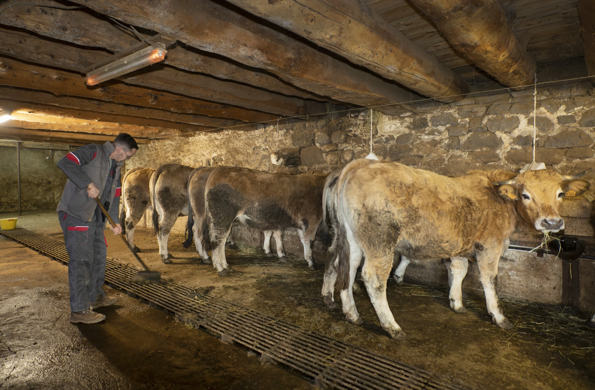
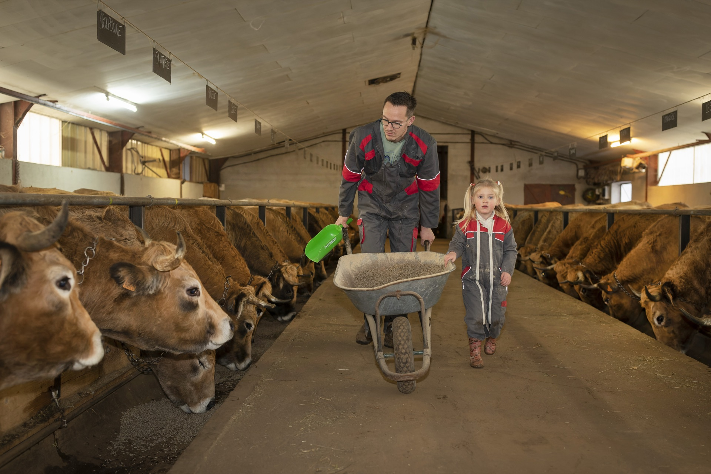
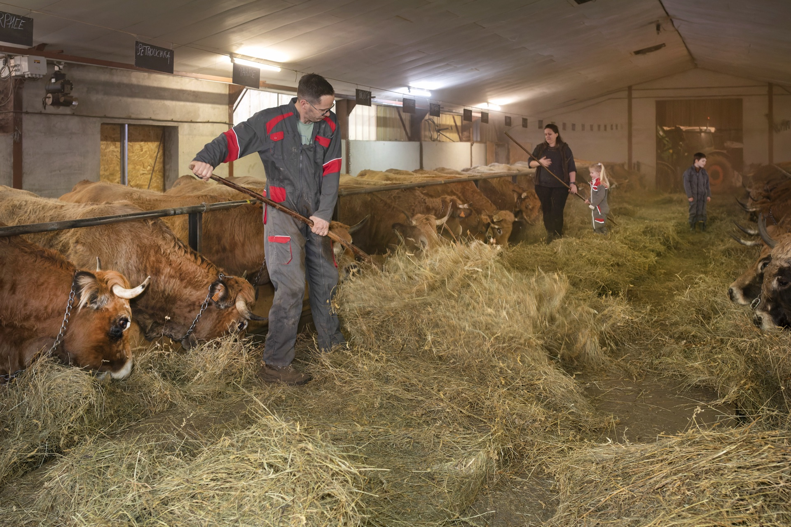
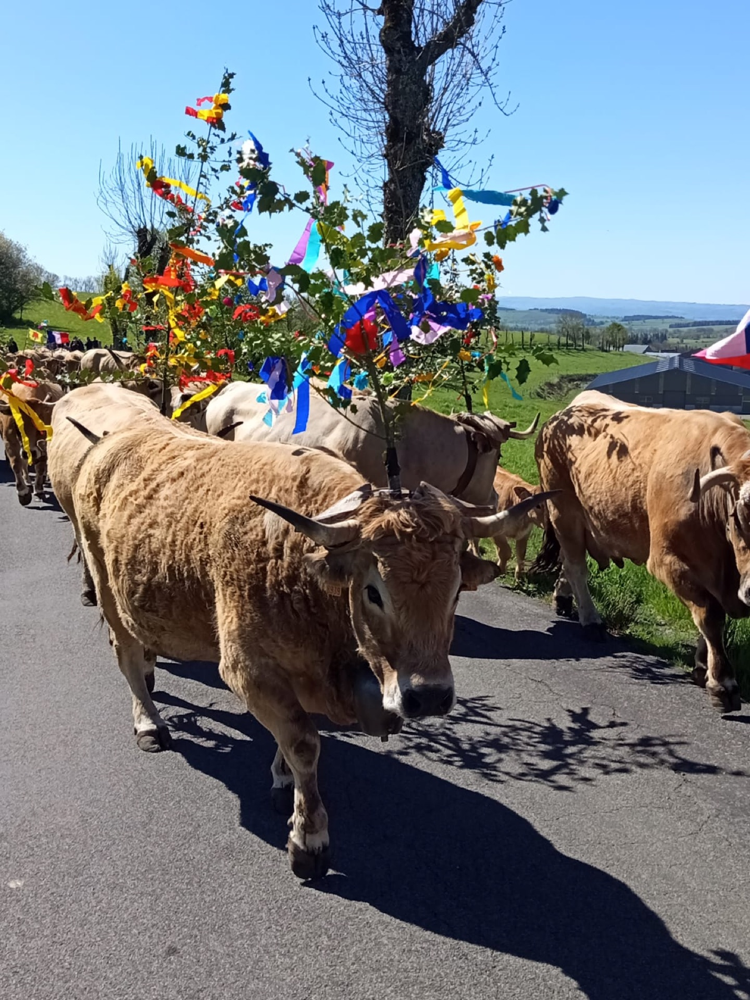
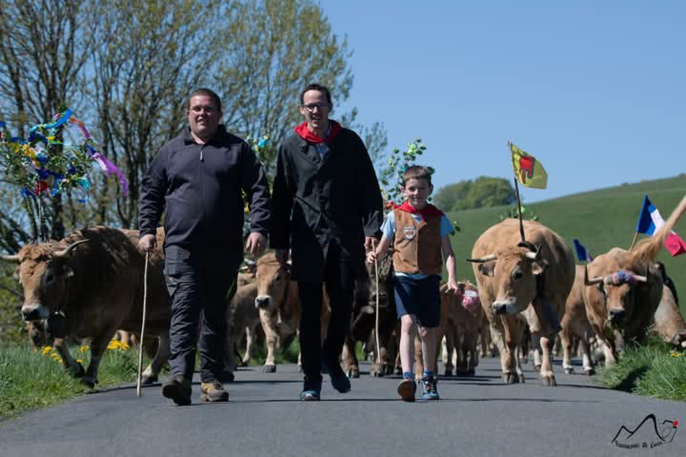

80
Mères Aubrac
Troupeau conduit en sélection et race pure, soigneusement entretenu pour préserver la qualité génétique de la race Aubrac.

La Ferme du Graillou
80 mères Aubrac, race pure, au cœur du Cantal
Rustique, docile et d'une beauté saisissante, la vache Aubrac est parfaitement adaptée aux conditions exigeantes des hauts plateaux du Cantal. À la Ferme du Graillou, elle est élevée dans le respect total de ses besoins naturels.
Troupeau conduit en sélection et race pure, soigneusement entretenu pour préserver la qualité génétique de la race Aubrac.

Exclusivement du foin de prairie naturelle récolté sur la ferme en hiver, et de l'herbe fraîche en libre pâturage en estive. Zéro aliment industriel.

20 génisses de 2 ans et 20 génisses de 1 an garantissent la pérennité du troupeau et la continuité de l'élevage pour les générations futures.
À la Ferme du Graillou, les vaches Aubrac ne mangent que ce que la terre leur offre : du foin de prairie naturelle récolté sur les prairies de Cézens en hiver, et de l'herbe fraîche en libre pâturage sur les estives en été.
Aucun aliment extérieur, aucun concentré industriel, aucun intrant artificiel. Ce choix radical est la garantie d'une viande au goût unique, révélant toute la richesse du terroir cantalien.
C'est cette alimentation exclusive qui donne aux charcuteries de la Ferme du Graillou leur caractère si particulier : une saveur profonde, une texture généreuse, et une typicité qui ne se fabrique pas.


Chaque printemps, la Ferme du Graillou participe à la grande fête de la Transhumance, moment emblématique du Cantal où les troupeaux Aubrac montent vers les estives, parés de leurs plus beaux ornements de fleurs et de rubans colorés.
Ce moment festif et populaire incarne les valeurs profondes de la ferme : l'attachement au terroir, le respect du rythme des saisons, et la fierté d'une agriculture vivante et enracinée.
La transhumance, c'est le lien entre les hommes et la terre, entre passé et avenir, entre la vallée et les hauts plateaux de l'Aubrac.
La Ferme du Graillou est nichée à Cézens, petit village du Cantal (15230) sur le plateau de l'Aubrac, à plus de 900 mètres d'altitude. Un territoire exceptionnel, classé parmi les plus beaux sites naturels d'Auvergne.
Ce plateau volcanique aux vastes étendues herbeuses offre des conditions idéales pour l'élevage extensif. L'air pur, les prairies riches en plantes aromatiques, les variations de températures entre saisons — tout contribue à façonner la qualité exceptionnelle des animaux élevés ici.
Le Cantal, c'est aussi une identité gastronomique forte : fromages AOP, viandes de qualité, charcuteries traditionnelles. La Ferme du Graillou s'inscrit fièrement dans cette tradition culinaire du Massif Central.
Nos charcuteries artisanales sont élaborées à partir de ces mêmes animaux élevés avec tant de soin, selon des recettes transmises de génération en génération.